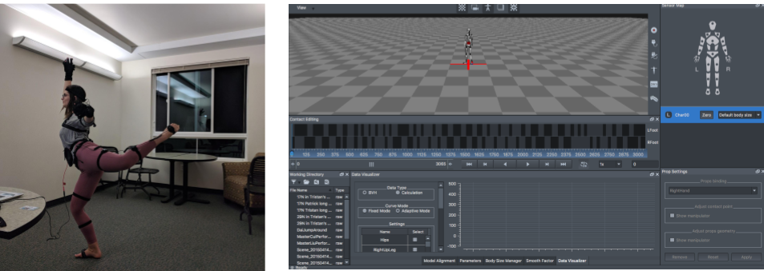

This project uses motion capture data to create movements that leave a trail. The program uses the locations of different parts of the body to create a paint brush affect as the body part moves across the screen.
The goal was to create a dance with this visual affect. While the current version of the code produces the dance in the video below, any motion capture data can be used. The program I have written can be easily edited to edit different variables such as: the body part the paint brush is attached to, the length the painting affect lasts, and the length if the trail created.
Getting the Data
I used the Perception Neuron Motion Capture Suit to collect the data.
The suit uses sensors to create a mapping of your body in the Axis Nueron Software. (shown in the picture below)

Converting Motion to Data
The data collected by the suit and the software was able to be downloaded into a binary FBX file. This file can then be passed into my program to change the movements you see on the screen.
The two videos below show how my movements were translated into an FBX file. The video to the right is what plays when you open the FBX file in FBX Preview on a computer.
Song: Still Feel It All by MARO
Final Product
Below is the final product I created to show how this program can be used to emphasize movements and illistrate how our bodies can move through space.